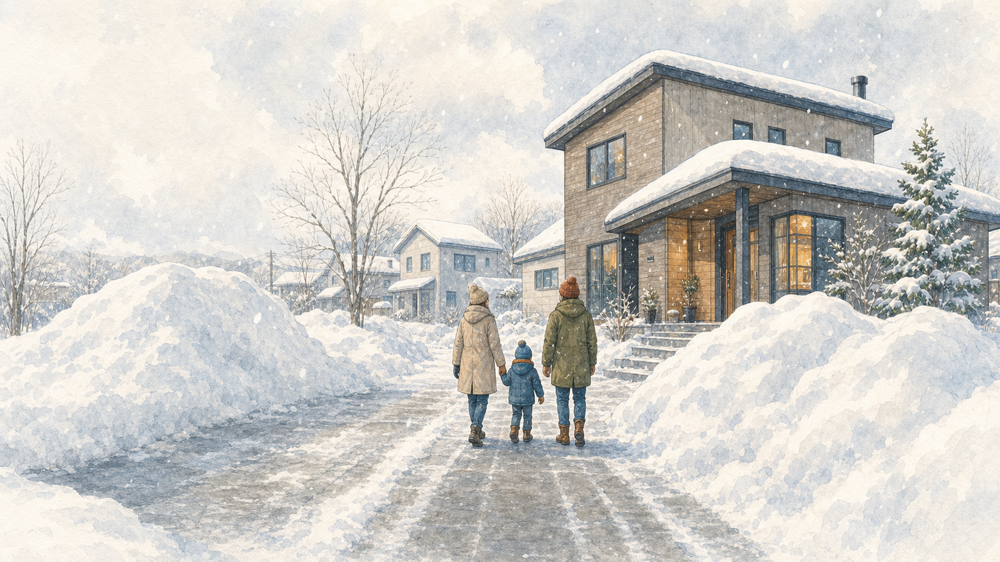
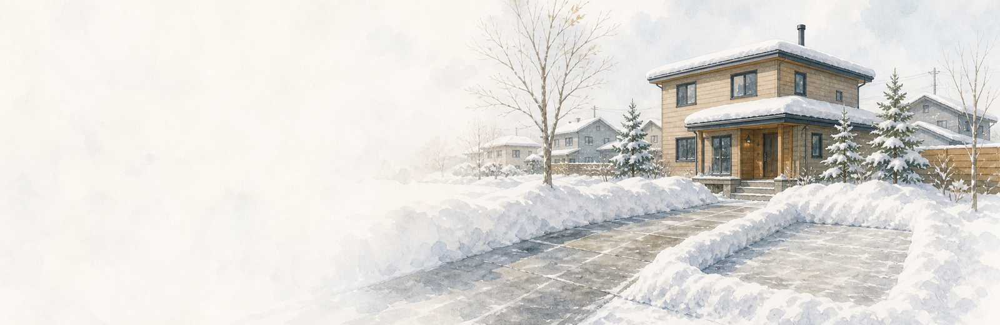
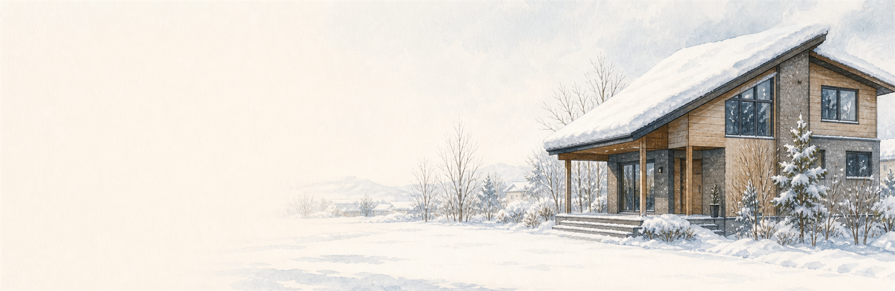
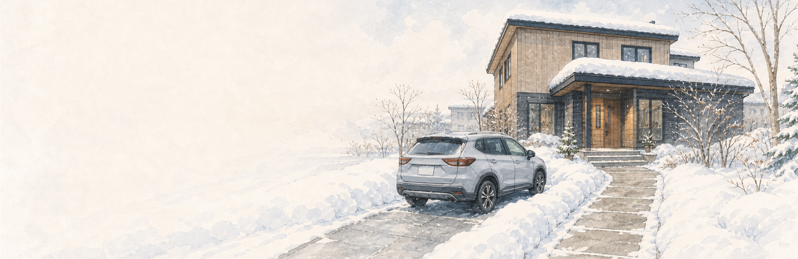

House Log 01
北海道で家を建てる前に、土地の「雪置き場」を見る
広さや日当たりだけでは見えなかった、冬の置き場と歩く道。家を建てる前に、家族で見ておきたい3つを絵と短いメモでたどります。
北海道 家づくり土地探し雪置き場

Chapter 01 / Snow01
雪は「消える」前提にしない
除雪した雪は、冬のあいだ敷地のどこかへ寄せます。道路側、駐車スペース横、庭側。まずは置き場を確保できるかを見ます。

Chapter 02 / Roof02
屋根から落ちる場所も見る
建物の配置だけでなく、屋根の向きと隣地までの余白も確認します。雪が落ちても通路や隣地をふさがない場所が必要です。

Chapter 03 / Route03
車と玄関の間を冬目線で見る
車と玄関が離れるほど、毎日の除雪範囲が増えます。小さい子と荷物を運ぶ日を思い浮かべ、歩く距離を見ます。

Why It Matters
土地は「建物が入るか」だけでは足りなかった
敷地面積だけでは見えない冬の余白があります。雪を寄せる場所、屋根から落ちる場所、車を出す場所、玄関まで歩く道を重ねて考えます。
雪の置き場落雪の余白冬の駐車玄関動線
土地候補を見たら、同じ項目で残す
あとから家族で比べるために、次の項目を同じ形でメモします。
- 道路の向き、間口、奥行き
- 駐車したい台数と車の出し入れ
- 雪を一時的に寄せられそうな場所
- 屋根から落ちる雪と隣地・通路
- 玄関までの距離と冬に歩くルート
- 日当たり、風、周辺の除雪状況
候補地A/B/Cとして匿名で残す
A
気に入った点
南向き、通勤しやすい、静かなど、最初に良いと思った理由。
B
冬に気になる点
雪置き場、道路幅、排雪、玄関までの距離、屋根の向き。
C
次に確認する人
不動産会社、住宅会社、自治体など、誰に何を聞くか。
雪置き場で見たい具体例
建物、駐車、庭、アプローチを置いたあとに雪の余白が残るか、仮に置いてみます。
- 道路側へ寄せても車をふさがないか
- 駐車スペース横でドアや荷物に困らないか
- 庭側へ寄せる距離が遠すぎないか
- 隣地側へ落ちる屋根にならないか
- 物置のあとも冬の通路が残るか
次に見るページ
よくある疑問
雪置き場は土地探しの段階でどこまで見ればいい？
最初はざっくりで大丈夫ですが、道路、駐車、玄関、屋根の向きとセットで見ます。現地で気になった場所を写真やメモで残すと、住宅会社へ相談しやすくなります。
この記録だけで土地を決められる？
決められません。法規、地盤、上下水道、ハザード、境界、ローン、税制は必ず専門家や公的情報で確認します。このページは、家族で候補を比べるための下見メモです。